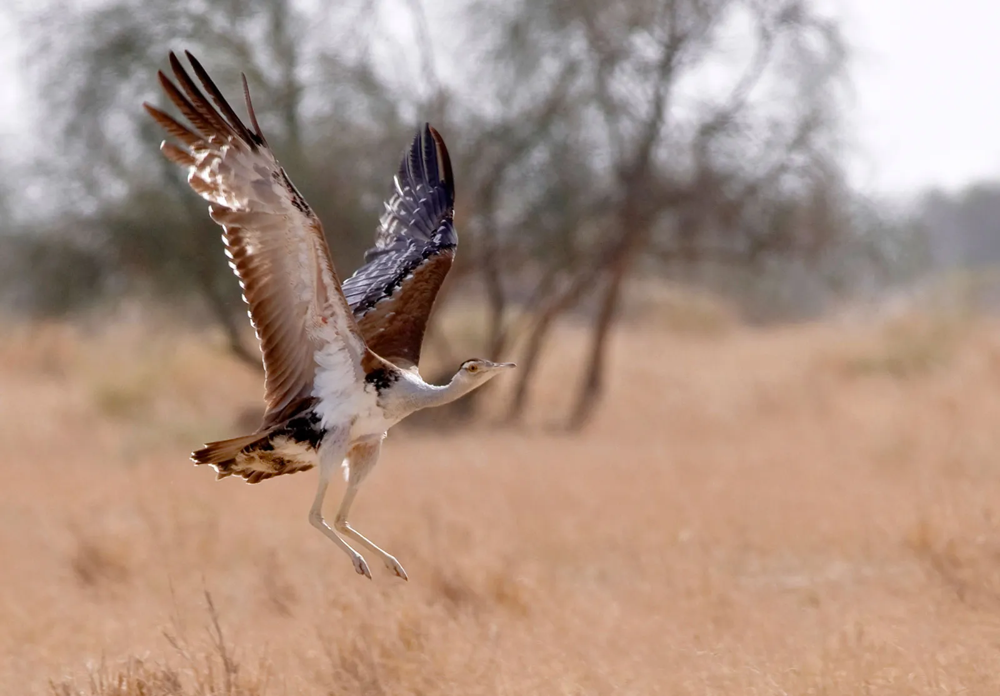

About the Great Indian Bustard
The Great Indian Bustard (Ardeotis nigriceps) is one of the heaviest flying birds in the world, standing up to 4 feet tall with a wingspan that can reach 8 feet. These magnificent creatures are often called the "God of Birds" in local folklore.
https
These ground-dwelling birds are known for their distinctive black crown, long neck, and powerful legs. Males perform elaborate courtship displays, puffing out a large white throat sac and strutting with their tail feathers fanned out like a turkey.
Habitat & Distribution
Great Indian Bustards once thrived across the dry grasslands, scrublands, and semi-desert regions of India. Their historical range covered over 11 states, but today they're confined to just a few protected areas.
Current Range:
- Rajasthan: Desert National Park and surrounding areas (largest population)
- Gujarat: Kachchh region and Blackbuck National Park
- Maharashtra: Great Indian Bustard Sanctuary
- Karnataka: Small scattered populations
These birds prefer open grasslands with scattered shrubs, avoiding areas with dense vegetation or trees. They need vast territories—a single bird can require up to 2-3 square kilometers of habitat. The landscape provides them with insects, small reptiles, and seeds that form their primary diet.
Unfortunately, their preferred habitat overlaps significantly with human agricultural and development activities, leading to inevitable conflicts and habitat loss.
Threats & Conservation
The Great Indian Bustard faces multiple severe threats that have pushed it to the brink of extinction. Understanding these challenges is crucial for effective conservation efforts.
Primary Threats:
- Power Lines: The single biggest killer—birds collide with overhead wires due to poor frontal vision
- Habitat Loss: Conversion of grasslands to agriculture and development projects
- Hunting & Poaching: Illegal hunting for meat and traditional medicine
- Livestock Grazing: Overgrazing destroys nesting sites and food sources
- Renewable Energy Projects: Wind turbines and solar installations in critical habitats
- Climate Change: Altered rainfall patterns affecting grassland ecosystems
The Indian government has launched several initiatives including the Species Recovery Programme and habitat improvement projects. International organizations are also supporting conservation efforts through funding and technical expertise.
How You Can Help
Every action counts in saving the Great Indian Bustard. Here are meaningful ways you can contribute to conservation efforts:
Direct Actions:
- Support wildlife NGOs working on bustard conservation
- Adopt eco-friendly practices to reduce environmental impact
- Choose sustainable tourism that benefits local communities
- Report wildlife crimes to forest authorities
- Participate in citizen science projects and bird surveys
Spread Awareness:
- Share information about the species on social media
- Educate friends and family about grassland conservation
- Support research and documentation efforts
- Advocate for wildlife-friendly policies
Remember, the Great Indian Bustard is not just a bird—it's an indicator of healthy grassland ecosystems that support countless other species. By protecting this magnificent giant, we're preserving an entire way of life for rural communities and wildlife alike.